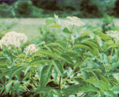
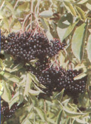

A pleasant summer's stroll can probably take you to a veritable supermarket of a bush!
Upon moving from the Midwest to the Idaho mountains, I was faced with the task of learning how to recognize scads of new woodland plants. Somehow, though -no matter where I might look-one particular shrub kept catching my eye. At first I simply noticed the plentiful plant's showy compound leaves . . . each with 5 to 11 leaflets. But then in June (after everything else had bloomed) this tall bush suddenly became a striking hillside ornamental packed with clusters of delicate white flowers. Still later-right at the ragged end of summer-the blossoms were transformed into bunches of tiny purple berries . . . and some of those tasty-looking, double-handful-sized fruit clumps became so heavy their stems drooped down with the weight!
When I quizzed my nearest neighbor about this abundant yet mysterious shrub, she said, "Why, they're plain of good-eatin' elderberries, child." So I decided to harvest a few fruity clusters and kitchen-test them! The berries were so easy to pick that I was able to gather a bagful in no time at all. I soon found out, though, that the tedious task of separating the individual fruits from their tiny twigs more than made up for the "pickability" of the manyberried clumps. And to tell the truth, the little morsels didn't taste all that good to me raw, either (though I've learned since then that some folks like 'em fine that way).
I was beginning to wonder if this particular wild food wasn't better left in the woods. But then I started cooking with elderberries, and I quickly reversed my opinion. The tidbits were downright delectable when baked (especially if I added a touch of lemon to my fixings): I just used elders in my blueberry recipes ... and turned out dandy pies, cobblers, and muffins. (The fruits became naturally mellow and mouthwatering as soon as I'd dried a few bunches, too.)
Once I'd achieved these culinary successes, I became so enchanted with elderberries that I even researched the curious plant in a field guide . . . and learned that blue, purple, and black specimens of Sambucus canadensis are common all over the U.S., and all are renowned for being finer sources of vitamin C than even oranges or tomatoes! There is also a less-common red-fruited variety-Sambucus racemosa-that's been reported to make some folks sick. However, since the good elders are all blue, purple, or black when ripe . . . the racemosa berries are easy to avoid.
After my initial enthusiastic elderberry spree, I had to catch up on a number of neglected homestead chores and pretty much forgot about the foraged fruit for a couple of weeks. Then one morning the same neighbor who first told me about elderberries sent her two boys over ... and those youngsters had brought me shopping bags stuffed with the purple clusters. The fruit actually looked a little old and dull to me, butwhen I called up to thank the kind woman-she explained that those elder rounds came from her special patch . . . and that the dusty look of the berries meant they had reached the peak of ripeness. "That 'bloom' is caused by the light frosts we've been having," she told me. "You watch. The birds will gobble up all the berries now."
ELDERBERRY JELLY
I was glad to have such an abundant supply of berries, but I didn't feel like "detwigifying" every single purple fruit . . . so I decided to simply clean out the leaves and larger branches and make juice. I boiled and mashed the clumps in small amounts of water, and then I hung the pulp-twigs and all-in jelly bags . . . until all the liquid dripped out.
Then, since an old childhood jump-rope jingle ("Elderberry jelly, huckleberry pie. That's what we like, me oh MY!") kept running through my head, I started making jelly. I simply combined a cupful of elder berry juice with two-thirds cup of honey and boiled down the mixture until it sheeted. Lo and behold, I ended up with a tender, firm, sweet-tart product that would have made my mother (the cooking queen of my childhood's county fairs) proud!
That batch was a great success with my family and friends, so I kept experimenting with the juice. I soon discovered that elderberries are low in natural pectin and that if I added some of the commercial gel-aiding substance, I could get a lot more jelly for the same amount of work. Better yet, I found that I could mix a naturally pectin-rich fruit juice-like grape or green apple-with equal parts of my elderberry drippings, to give my concoctions a brand-new tangy flavor!
ELDERBERRY SLUMP
After stuffing my shelves with a variety of elder jellies, I still had a kegful of juice . . . so I tied my apron back on and created a juice-and-dumpling dessert: elderberry slump. First I mixed together 2 cups of elderberry juice, 2/3 cup of honey, a sprinkle of cornstarch (for thickener), and 1/2 teaspoon of lemon juice. I let that combination simmer slowly in a pot while I started on the dumplings.
To fix these dough morsels, I measured out 1 cup of cake flour (3/4 cup of bread flour and one tablespoon of cornstarch could be substituted), 2 teaspoons of baking powder, and 1/2 teaspoon of salt. I mixed these ingredients and sifted them three times to make the dumplings light and airy. Then I filled a 1/2-cup measure with one beaten egg and milk, and stirred that liquid combination into the dry "siftings" to make a stiff batter.
I dropped spoonfuls of the tasty paste into my simmering elder juice and then cooked the dumplings-covered-for two minutes on each side. The last step was to serve the finished elderberry slump with whipped cream . . . and watch the plates get scraped clean!
ELDERBERRY WINE
However, my whole family ate their fill of elderberry slump . . . and I still had lots of juice! So I set out to brew up a batch of that legendary inebriant: elderberry wine. Unfortunately, my earlier vinting attempts had earned me the title of "lil of winewrecker", but I figured the possible reward would certainly be worth the effort, so I altered a simple grape wine recipe that my parents had used into my own formula for elderberry balloon wine.
I started off by sterilizing a gallon jug (to be sure that no vinegar-making bacteria would subvert my efforts) and combining-in this container-1 quart of elderberry juice, 1/4 teaspoon of dry yeast, and 3 cups of sugar. Then I filled the vessel with water and tied a big, heavy balloon-as firmly as possible-over the neck of the jug.
The readily made concoction frothed and bubbled wildly, and the balloon became so inflated I thought it would burst. But it held together somehow, and-amazingly enough-when I took the air bag off six weeks later I had a tart, scarlet berry wine . . . with no vinegar taste!
FROZEN CONCENTRATE
Since my pantry was nigh onto overflowing with elderberry goodies by this time, I decided to freeze the rest of my juice until midwinter .. . when the fruity liquid could be used for special coldweather treats.
I did take measures to save space, though, by placing blocks of frozen juice in cheesecloth and letting the thawing product drip down into storage containers. The elder fluid melted first (leaving the water content still iced), and gave me a low-volume elderberry concentrate to refreeze and put away!
FLOWERS, TOO
That September gave me an elderberry harvest I'll never forget. However-as I learned the following June-I had completely missed out on half of the amazing plant's food products: the flowers!
The white-petaled clusters-called "elderblow"-can be used to make tea . . . added to muffins, pancakes, and custards . . . cooked up as fritters (just dip an unshucked cluster in your favorite batter and fry) . . . and more.
All in all, I bless the day my neighbor told me about elderberries. I still wonder, however, how the generous plant came by its name. Perhaps it's because the "elder" berries ripen when the other wild fruits are pretty much gone . . . or just because folks have known about the source of good eating for so long. But one thing's for sure: Since I keep on learning new culinary uses for the delectable fruit and flow ers, elderberries will never get old for me!
EDITOR'S NOTE: Marion has discov ered a great deal about elderberry "eats", but she's right when she says there's more to be learned! Here are some good leads for further food and drink fixing ideas:
[1] As George E. Luther revealed in MOTHER NO. 59's Down-Home Country Lore column, there is an easy way to pick the ripe berries off all those twigs! Simply put a small piece of 1/2" mesh hardware cloth over a bucket or large bowl and rub the berry bunches across this screen. The fruit will come off cleaner (and with less bruising) than if you'd picked them all by hand!
[2] If you want to absorb some helpful knowledge about other elderberry-and elderblow-wines, you'd do well to read Sandra Oddo's "Feedback on Elderberries" in MOTHER NO. 27, page 17 (see page 116 for information on how to order back issues).
[3] And for more elderberry and flower recipes-covering everything from cough syrup to chutney to exquisite elder-sumac jelly-the best resource just has to be that old forager's masterpiece: Stalking the Wild Asparagus by Euell Gibbons (available from your local bookstore or for $5.95 plus 95 cents shipping and handling- from Mother's Bookshelf, P.O. Box 70, Hendersonville, North Carolina 28791).
|
 |
 |
|